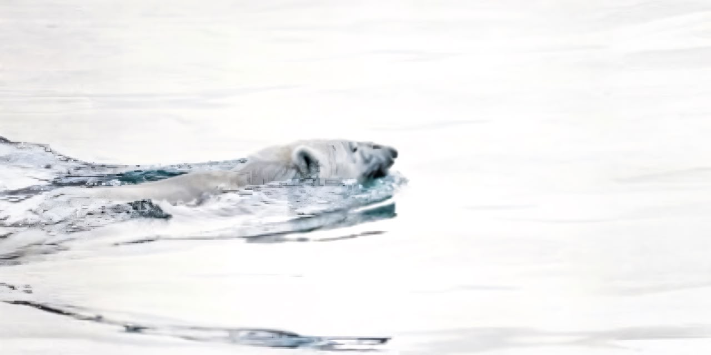

Wildlife Under Threat.
Wildlife across the world is facing increasing pressure from habitat destruction, climate change, pollution and human exploitation.
Wild life are particularly vulnerable because they depend on Arctic sea ice for hunting, travelling and survival.